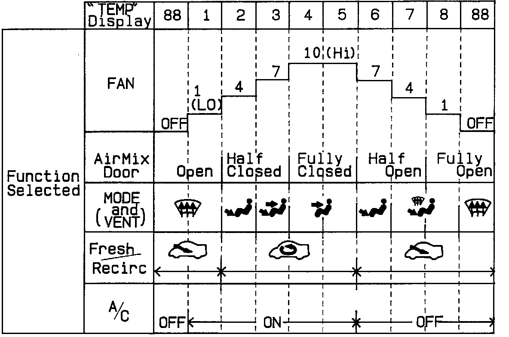

Function Selection and Operation Check
Function Selection and Operation CheckThis check will quickly and automatically select and operate all functions of the climate control system, in the combinations and sequence shown below. It may help clarify a problem, or identity one that didn't show up wen you can the self-diagnosis circuit check.
Turn the FAN switch to AUTO, then push in both the MODE and AUTO buttons and hold them in while you start the engine. The control unit will then automatically run the check in eight steps, one step every 5 seconds.
To stop at one of those steps, push the MODE button; to continue, push it again for each step after that. Pushing the OFF button or turning the ignition OFF, will turn off the check.
Check the temperature, volume, and source of the air flow, and compare it to what the chart shows it should be.
